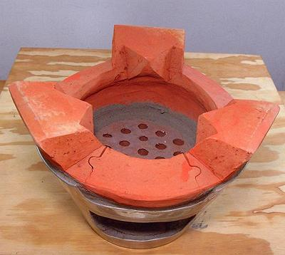

Vietnamese Clay Stove

This is the kind of stove woks are made for. The heat is
intense, close to the wok, and the highest heat is in the center where
it belongs. This is almost impossible to achieve on a North American
home stove. Burning charcoal is place in the top. Ashes fall through
the holes and can be shoveled out through the door. There is enough
space to get more fuel in without removing the wok.
The stove in the photo is a medium sized one, 11 inches in diameter.
I found I have a round iron grate that just fits this stove, quite
convenient since this stove can be used for grilling as well as wok
cooking. A grill basket could also be used.
More on Kitchen Equipment.
Buying:
The photo example was purchased from Hawaii
Supermarket in Los Angeles (San Gabriel) for 2018 US $13.99. They also
have smaller and larger versions, the largest being about 14 inches
and costing $20.99. Stoves of this sort are also available on-line,
but I see rather high prices for them.
ke_claystvz 180909 - www.clovegarden.com
©Andrew Grygus - agryg@clovegarden.com - Photos
on this page not otherwise credited © cg1
- Linking to and non-commercial use of this page permitted